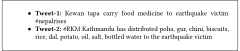

DOI: https://doi.org/10.1145/3184558.3186935
WWW '18: Proceedings of The Web Conference 2018, Lyon,
France, April 2018
Effective clustering of short documents, such as tweets, is difficult because of the lack of sufficient semantic context. Word embedding is a technique that is effective in addressing this lack of semantic context. However, the process of word vector embedding, in turn, relies on the availability of sufficient contexts to learn the word associations. To get around this problem, we propose a novel word vector training approach that leverages topically similar tweets to better learn the word associations. We test our proposed word embedding approach by clustering a collection of tweets on disasters. We observe that the proposed method improves clustering effectiveness by up to 14%.
CCS Concepts: • Information systems → Clustering and classification;
ACM Reference
Format:
Debasis Ganguly and Kripabandhu Ghosh. 2018. Contextual
Word Embedding: A Case Study in Clustering Tweets about
Emergency Situations. In WWW '18 Companion: The 2018
Web Conference Companion, April 23–27,
2018, Lyon, France. ACM, New York, NY, USA
2 Pages. https://doi.org/10.1145/3184558.3186935
Automated analysis of social media posts about requirement and availability of resources (e.g. food and medicine) has been used to detect and continuously monitor disaster events such as earthquakes and floods [2]. Clustering a stream of large volumes of tweets can potentially be helpful to analyze tweets pertaining to different emergency situations. Clustering may further help to identify tweets related to different aspects or topics of information requested or supplied during an emergency situation, e.g., requesting or declaring availability for food, medicine etc. Conventional text-based approaches for tweet clustering is likely to suffer from the lack of sufficient context and can lead to vocabulary mismatch problems due to the short length of the text and informal nature of the content. A semantically driven tweet clustering method, e.g. one which leverages word vector embedding, is likely to reduce this vocabulary mismatch problem. Generally speaking, embedding approaches, e.g. word2vec [4], learn semantic associations between words or n-grams from the contexts around them. However, for the case of short and informal documents, such as tweets, this context is likely to be insufficient and noisy for effectively learning the word associations. This, in turn, may degrade the quality of clustering.
To alleviate the problem of short and noisy contexts of tweets for the purpose of word vector learning, we propose a linear transformation based approach, similar in principle to [1], that aims to improve the word vector representations by extending this context from other topically similar tweets. More precisely, we learn a transformation matrix that aims to maximize the cosine similarity between a current word of a tweet and other constituent words from similar tweets.
In word2vec, a sliding window comprised of the current word and its context is used to maximize an objective function that aims to make the current word vector similar to its context and dissimilar to other randomly chosen words from outside this context [4]. For short documents, such as tweets, the context vectors being small in size are unable to provide sufficient evidence for effective estimation of word-context semantic relations. To alleviate the problems of short contexts of tweets, we propose to learn a transformation matrix that transforms a word vector w close to a set of, generally speaking, topically similar words. Formally, this set of words that are topically similar to the word w is represented by the set
In the particular context of tweets, lexical similarity is likely to play an important role in topically grouping tweets. We propose to partition a collection of tweets into a set of clusters. The semantic relationship S (Equation 2) then considers terms u and v from the same cluster to be semantically related. More specifically, each constituent word pair from the tweets belonging to the same cluster are considered to be members of the set S. These act as positive examples to learn the transformation matrix θ of Equation 2.
Dataset. We perform experiments on the FIRE’16 Microblog Track data1, comprising 60,685 tweets and 7 topics along with relevance judgments for each topic. We use the relevance assessments of the FIRE-2016 Microblog dataset to construct the ground-truth for clustering evaluation. Each pair of documents judged relevant for the same query are considered to belong to the same cluster in the ground truth. The ground-truth thus considers a clustering output favourably if two documents that are relevant to the same query are predicted to be a part of the same cluster.
Baselines. The first baseline, denoted as ‘BoW’, represents documents by a tf-idf bag-of-words vector. The second baseline, denoted as ‘Word2vec-sum’, represents each document as a sum of the word vectors (dimension set to 200) of the constituent words of a tweet obtained by the baseline skipgram model [4]. A third baseline employs the doc2vec [3] embedding of each tweet for clustering. Starting with the baseline skipgram vectors, we learn the transformation matrix by applying Equation 2. We employ K-means clustering on BoW representation of documents to learn the transformation matrix. Similar to the ‘Word2vec-sum’ baseline, we represent documents by summing the transformed word vectors.
Parameters. The first parameter in the word vector transformation method is the number of clusters in which to partition the document collection for the purpose of defining the semantic contexts. We vary the number of clusters, K, within a range of 5 to 1000 for obtaining the transformed word vectors. The second parameter, which is applicable to the ‘Wordvec-sum’ baseline, is the length of the window (context vector) in word2vec. We vary this parameter, denoted as wlen, within a range of 3 to 20. We then learn the transformation matrix on the word vectors obtained with the skipgram model with different values of these window lengths.
Table 1 shows the clustering results with the optimal parameter settings for each method. It can be seen that the text-only approach produces more effective clusters than the skipgram word vector based method, i.e., ‘Word2vec-sum’. Results are seen to considerably improve with the use of transformed word vectors. It can be seen that the ‘Semantic-wvec’ (proposed) yields better RI values than the BoW for values of K ≥ 20, which suggests that the context derived from similar tweets from the same cluster helps to learn improved word representations. Results worse than the text-only baseline, for too small values of K, suggests that the context needs to be large enough for effective learning of the word vectors. The proposed method shows better performance than doc2vec for relatively higher values of wlen. Further, too large values of K decreases clustering effectiveness.
|
Parameters
|
|||
|---|---|---|---|
| (r)2-3 Document Representation | wlen | K | R-Index |
| BoW (Bag of words) | - | - | 0.6349 |
| Word2vec-sum (Sum of skipgram wvecs) | 16 | - | 0.5646 |
| Doc2vec | 16 | - | 0.6361 |
| Semantic-wvec (sum of transformed wvecs) | 6 | 5 | 0.6231 |
| 3 | 10 | 0.6269 | |
| 11 | 20 | 0.6452 | |
| 18 | 50 | 0.6533 | |
| 12 | 100 | 0.6480 | |
| 5 | 1000 | 0.6068 | |
Figure 1 shows the effect of varying wlen on RI for K = 50 (optimal value as observed in Table 1). The ‘Semantic-wvec’ method consistently outperforms the ‘Wordvec-sum’ and the text-only baseline (shown as a constant with respect to wlen) for a wide range of wlen variation. We observed that our method was able to group the following pair of tweets in the same cluster unlike the BoW, Word2vec-sum and Doc2vec baselines. Despite Tweet-2 not containing the term ‘food’, it is grouped in the same cluster as Tweet-1.

In this paper, we proposed a linear transformation based approach to improve the the word2vec embedding by leveraging semantic contexts. In our study, the semantic context refers to a set of topically similar documents obtained by clustering a document collection. Our experiments on the FIRE-2016 disaster dataset shows that representing documents as sum of transformed word vectors produces more effective clusters than BoW and sum of non-transformed word2vec representation baselines. In future, we would like to investigate the usefulness of other contexts, e.g. time and location for transformation of constituent word vectors of tweets.
1http://www.isical.ac.in/~fire/data/2016/FIRE2016-microblogs-track-data.tar.gz
This paper is published under the Creative Commons Attribution 4.0 International (CC-BY 4.0) license. Authors reserve their rights to disseminate the work on their personal and corporate Web sites with the appropriate attribution.
WWW '18, April 23-27, 2018, Lyon, France
© 2018; IW3C2 (International World Wide Web Conference
Committee), published under Creative Commons CC-BY 4.0
License. ACM ISBN 978-1-4503-5640-4/18/04.
DOI: https://doi.org/10.1145/3184558.3186935